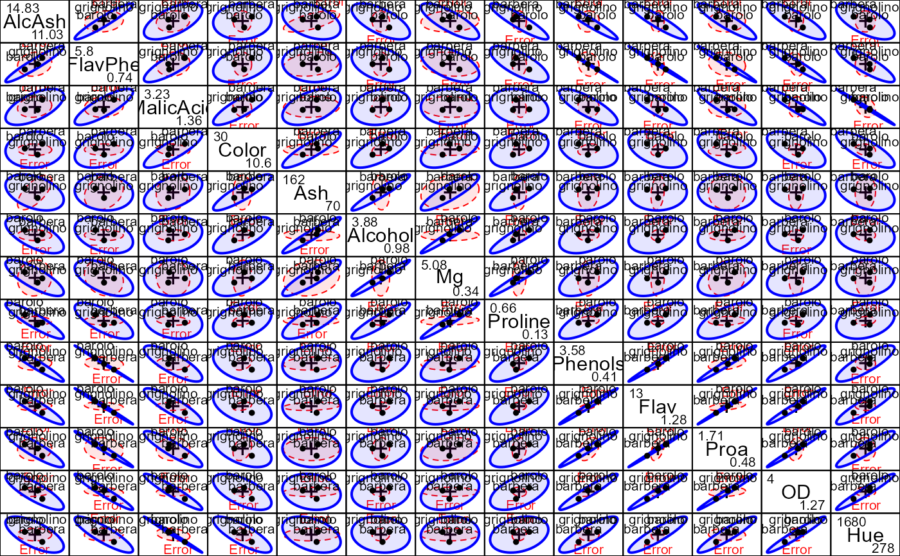
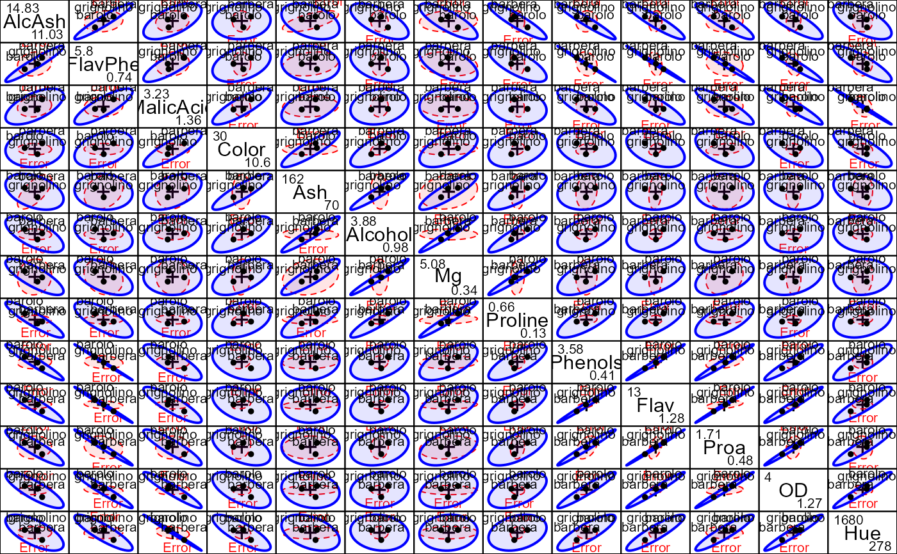

The varOrder function implements some features of “effect
ordering” (Friendly & Kwan (2003) for variables in a multivariate
data display to make the displayed relationships more coherent.
This can be used in pairwise HE plots, scatterplot matrices, parallel coordinate plots, plots of multivariate means, and so forth.
For a numeric data frame, the most useful displays often order variables according to the angles of variable vectors in a 2D principal component analysis or biplot. For a multivariate linear model, the analog is to use the angles of the variable vectors in a 2D canonical discriminant biplot.
Usage
varOrder(x, ...)
# S3 method for class 'mlm'
varOrder(
x,
term,
variables,
type = c("can", "pc"),
method = c("angles", "dim1", "dim2", "alphabet", "data", "colmean"),
names = FALSE,
descending = FALSE,
...
)
# S3 method for class 'data.frame'
varOrder(
x,
variables,
method = c("angles", "dim1", "dim2", "alphabet", "data", "colmean"),
names = FALSE,
descending = FALSE,
...
)
# Default S3 method
varOrder(x, ...)Arguments
- x
A multivariate linear model or a numeric data frame
- ...
Arguments passed to methods
- term
For the
mlmmethod, one term in the model for which the canonical structure coefficients are found.- variables
indices or names of the variables to be ordered; defaults to all response variables an MLM or all numeric variables in a data frame.
- type
For an MLM,
type="can"uses the canonical structure coefficients for the giventerm;type="pc"uses the principal component variable eigenvectors.- method
One of
c("angles", "dim1", "dim2", "alphabet", "data", "colmean")giving the effect ordering method.- "angles"
Orders variables according to the angles their vectors make with dimensions 1 and 2, counter-clockwise starting from the lower-left quadrant in a 2D biplot or candisc display.
- "dim1"
Orders variables in increasing order of their coordinates on dimension 1
- "dim2"
Orders variables in increasing order of their coordinates on dimension 2
- "alphabet"
Orders variables alphabetically
- "data"
Uses the order of the variables in the data frame or the list of responses in the MLM
- "colmean"
Uses the order of the column means of the variables in the data frame or the list of responses in the MLM
- names
logical; if
TRUEthe effect ordered names of the variables are returned; otherwise, their indices invariablesare returned.- descending
If
TRUE, the ordered result is reversed to a descending order.
Methods (by class)
varOrder(mlm):"mlm"method.varOrder(data.frame):"data.frame"method.varOrder(default):"default"method.
References
Friendly, M. & Kwan, E. (2003). Effect Ordering for Data Displays, Computational Statistics and Data Analysis, 43, 509-539. doi:10.1016/S0167-9473(02)00290-6
Examples
data(Wine, package="candisc")
Wine.mod <- lm(as.matrix(Wine[, -1]) ~ Cultivar, data=Wine)
Wine.can <- candisc(Wine.mod)
plot(Wine.can, ellipse=TRUE)
#> Vector scale factor set to 5.168
 # pairs.mlm HE plot, variables in given order
pairs(Wine.mod, fill=TRUE, fill.alpha=.1, var.cex=1.5)
# pairs.mlm HE plot, variables in given order
pairs(Wine.mod, fill=TRUE, fill.alpha=.1, var.cex=1.5)
 order <- varOrder(Wine.mod)
pairs(Wine.mod, variables=order, fill=TRUE, fill.alpha=.1, var.cex=1.5)

order <- varOrder(Wine.mod)
pairs(Wine.mod, variables=order, fill=TRUE, fill.alpha=.1, var.cex=1.5)
